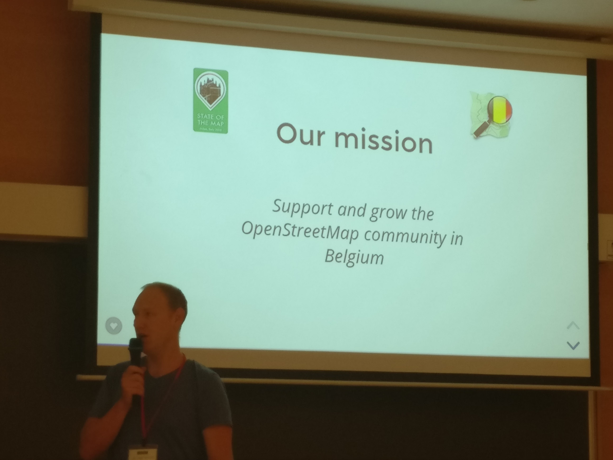

My first SotM conference
We’re back on this blog after the summer pause, with the report of my attendance to the very popular State of the Map (SotM) conference, on July 28-30 at the Politecnico di Milano. This university is as per Wikipedia the largest technical university in Italy. SotM is far from being a niche conference, given the 400 attendees and the 50 nationalities represented. Indeed, OpenStreetMap (OSM) is a growing community, not only heavily used by non-profit and humanitarian organizations but more and more by private companies. If we look at the sponsors list, we see it’s not only the case for specialized ones such as Mapbox or Mapillary: the business value of crowd-sourced and almost live-updated information is indeed appreciated by big to very big players like TeleNav, and even Microsoft/Bing and Facebook. One aspect that particularly strikes in the general OSM community is the value given to the contribution to the OSM database. And Facebook sure knew how to make a good impression: at the conference its representative announced that in the last six months they went to use OSM to support their services from 22 countries, to essentially the whole planet, with the notable exceptions of Argentina, India, Pakistan, Russia, and Turkey (and yes, China is included in their list, despite the evidence). Such a declaration of interest towards the OSM world was indeed well received.

Figure 1: «Voi darete all’Italia Ingegneri, Architetti»
Nevertheless, there is no reason to believe OSM, nor the conference, was a repository of corporate talks and personalities: many varied people from a lot of horizons were there, from academic to self-employed web developers, simple mapping enthusiasts, and volunteers. Witnessing this enthusiasm and creativity, together with the opportunity to know new people from all around the world and to make new friends, was the best part of the conference.
I also participated at the poster session. I capitalized on the team’s experience to generate a map of Milan (extracted of course from OSM) with a color-coding of the buildings (obtained from the Copernicus Land Monitoring Service at the European Environment Agency) that expresses the average time by foot to the five restaurants closest to their centroid. The tracks and times were obtained thanks to the OSRM project. You can see the poster here, as well as the source code needed to reproduce it. The workflow consists in:
- a C++ script relying on the Open Source Routing Machine library to compute the routes and walking distances,
- and R scripts, for the data manipulation and visualization, mainly with the
sfandggplot2libraries.
Figure 2: The poster and his author
Among all the presentations I have attended, the following ones caught my attention.
Qt to build OSM-based maps
by Paolo Angelelli
Qt is a “cross-platform application framework and widget toolkit”. To use Qt means essentially to code in C++, but also in Javascript and QML. QML stands for Qt Modeling Language, user interface markup language. It was introduced in Qt4, and is now mature in Qt5. Qt5 come with a lot of add-ons. In Qt5 there are a ton of add-ons, such as Qt location that comes with submodules:
- Positioning: C++ and QML API to retrieve the current location, which works on Linux, WinRT, Android, MacOS, iOS, and serial NMEA
- Location: C++ and QML API for geocoding, routing, with PoI search and manipulation
There’s also a QML API for mapping: display maps, add (interactive) content. The framework comes with a built-in raster engine (looks good), extensible with 3rd party mapping engines. The map can rotate and tilt, you can embed a georeferenced video on top of the map. Qt5.11 (in development) comes with specific maps objects. Finally, an OpenStreetMap plugin is also available. Qt fully consumes OSM data.
I personally don’t have any prior experience in developping in Qt, but it’s good to know that I can brush off my C++ and use it for this kind of application.
Other highlights
During three days attended lots of other inspirational talks.
- Julian Simioni developed a piece of software that interpolates addresses to estimate street numbers that are not (yet) included in OSM.
- Emanuela Mihut talked about her ongoing PhD research, able to automate the generation of OSM data thanks to convolutional neural networks. This contribution is aimed at facilitating the work of the Humanitarian OpenStreetMap Team in providing a starting point for mapping areas that suffered a natural calamity.
- Julien Coupet presented VROOM, an open-source solver for Vehicle Routing Problems, which has live demo app to solve the travelling salesman problem.
- The passionate OSM Belgium team, that organizes monthly meet-ups.

Figure 3: Ben Abelshausen from OSM Belgium has the floor.
- I attended a nicely organized workshop organized by MapBox, that taught users how to extract data from OSM through Overpass, style it in Mapbox Studio and create an interactive demo. You can find it here.
Milan and beyond
During the closure of the conference, the OSM Foundation awarded the most active and innovative contributors. The venue for next year’s conference was also revealed, and the city of Heidelberg in Germany was chosen. See you there, maybe!